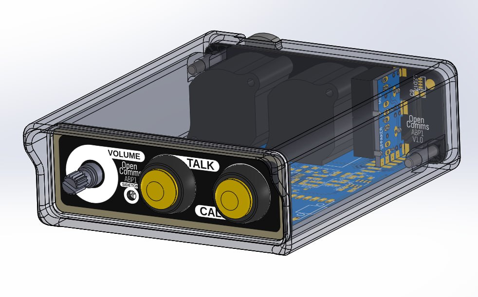

ABP1 (Analog beltpack 1)
The ABP1 is a straightforward and reliable beltpack intercom for seamless communication. This beltpack uses the 2 wire partyline interface.
Concept
The ABP1 was designed for simplicity. It provides users with a compact and lightweight device that seamlessly integrates into OpenComs partyline analog system. The ABP1 serves as a great starting point for anyone looking to build and/or extend their own analog beltpack for partyline intercom systems.
The idea was to create a "as simple as possible" starting point for future versions. For example instead of the typicall 4-pin XLR found on beltbacks for headsets, the APB1 uses two 3.5mm jacks. Here are some other differences:
The intercom is composed of:
- One talk button
- One call button
- One volume knob
- One sidetone adjustment potentiometer
- One male and one female XLR for the partyline
- Two 3.5mm jack (headphones + electret microphone)
- 16 Leds for the front panel indicator
To facilitate the building process of this beltpack, it is composed of 4 individual PCBs:
- Front panel
- Holes for the buttons, volume and sidetone
- 16 Side facing LEDs (WS2812B-4020)
- Pads for a potentiometer placed up-side-down for the sidetone
- Back panel
- Holes for the 2 XLR connectors
- Holes for the 2 3.5mm jacks
- Holes for the two mounting screw
- Back panel jack board
- Simple board to hold the two jacks at a right angle
As the digital side fully control the talk, mute and call signals, this intercom also supports RMK (remote-mic-kill) provided that the off pulse is long enought to reset the microcontroller.
PCB & Schematics
Main PCB
Front panel
Back panel
Back panel jacks
3D
Front:

Back:
 Note: These screenshot may not be fully up to date, especially the models of PCBs
Note: These screenshot may not be fully up to date, especially the models of PCBs
The 3D printed case is availible at: [Solidworks source] [STL]
Firmware
The ABP1 digital side is based on the Atmega328p, the same as the arduino uno/nano/.... which makes it very easilly hackable to do what you want.
The firmware can be found here:https://github.com/OpenComs/device_abp1/tree/main/firmware
At the start you'll find some configuration values:
#define CONF_CALL_BLINK_DURATION 1500
#define CONF_CALL_VIBRATE_AFTER 5000
#define CONF_CALL_BUZZ_AFTER 10000
#define CONF_TALK_LATCH_THRESHOLD 250
- The
CONF_CALL_BLINK_DURATIONsets how long will the leds blink if a call is detected - The
CONF_CALL_VIBRATE_AFTERsets how long a call signal need to be detected to enable the vibration motor - The
CONF_CALL_BUZZ_AFTERsets how long a call signal need to be detected to enable the buzzer - The
CONF_TALK_LATCH_THRESHOLDset the maximum time the talk button should pressed to latch the state change instead of the tremporary change
Cost
The overall cost of this device is pretty low, especially if you build multiple of them.
Here is an approximation of the cost to build 5 beltpacks:
| What | Bought were | Cost | Quantity | Comment |
|---|---|---|---|---|
| Main PCB | JLCPCB | 2.22eur | 5 | |
| Main PCB assembly | JLCPCB | 34.97eur | 5 | Economic PCBA, most of the components |
| Front panel | JLCPCB | 5.08eur | 5 | Black PCB with white silkscreen |
| Back panel | JLCPCB | 5.08eur | 5 | Black PCB with white silkscreen |
| Back panel jacks | JLCPCB | 3.62eur | 5 | |
| NC3MAAH (Male XLR) | Farnell | 8.28eur | 5 | |
| NC3FAAH1 (Female XLR) | Farnell | 7.74eur | 5 | |
| Red button (12mm) | Aliexpress | 2.88eur | 5 | |
| Green button (12mm) | Aliexpress | 2.88eur | 5 | |
| PJ307 3.5mm jack | Aliexpress | 1.59eur | 10 | |
| WS2812B-4020 | Aliexpress | 11.47eur | 100 | MOQ is 100 only 16 needed by intercom |
| PTD902-2015F-A103 | Farnell | 15.54eur | 5 | Any 5k to 10k log potentiometer is fine |
| 5k trimpot | Aliexpress | 2.56eur | 100 | MOQ is 100 only 5 needed |
Without 3D printer filament and other tools nesseary to build these the raw cost of the components for 5 beltpacks amount to arround 104eur with is arround 21eur per intercom.
Note that some of the part here can be salvaged or found for way cheaper, which will bring the cost down even more